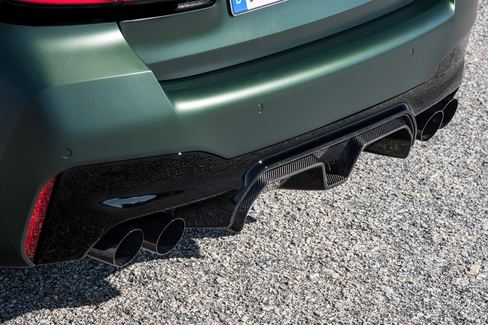

Auspuffanlagen

M Sportabgasanlage
Die M Sportabgasanlage mit puristischen Doppelendrohren in Edelstahl bietet eine Sound-Charakteristik, die sich über die integrierte Abgasklappentechnik anpassen lässt. Die per Fahrdynamiktaste für den Motor wählbaren Programme SPORT und SPORT+ werden von einem noch intensiveren Klang untermalt.